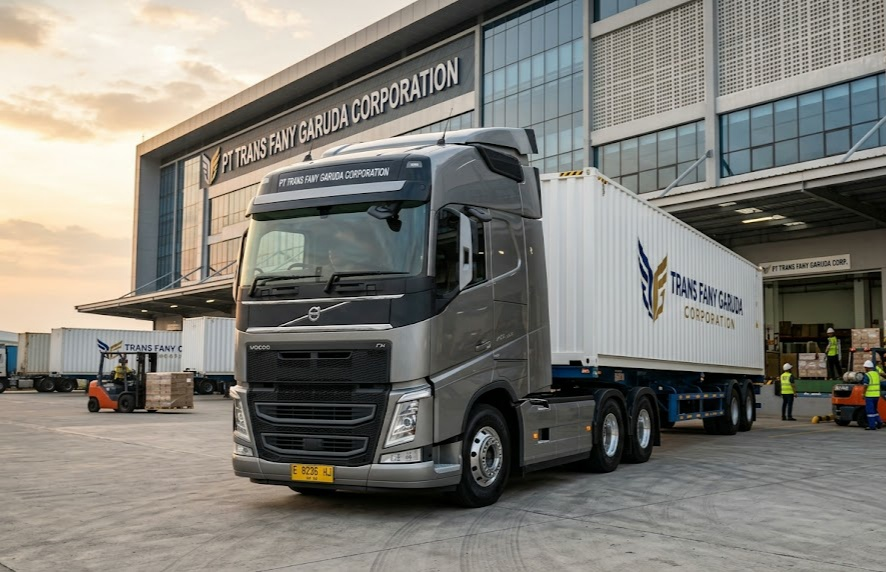
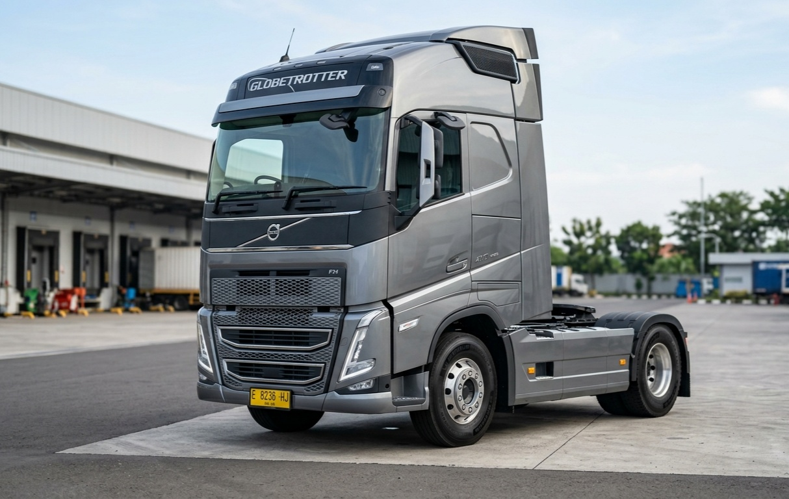
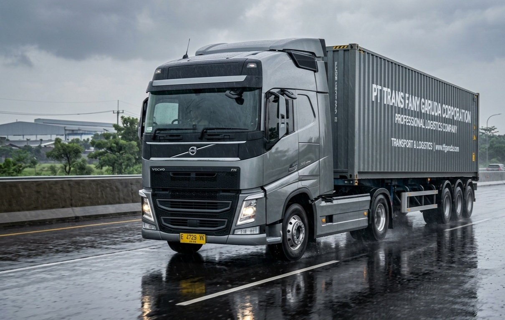
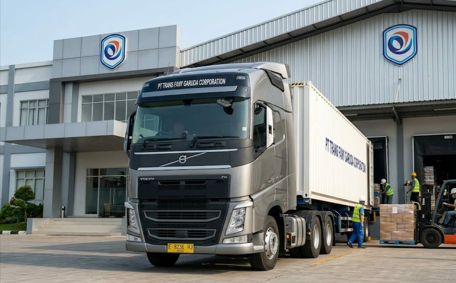
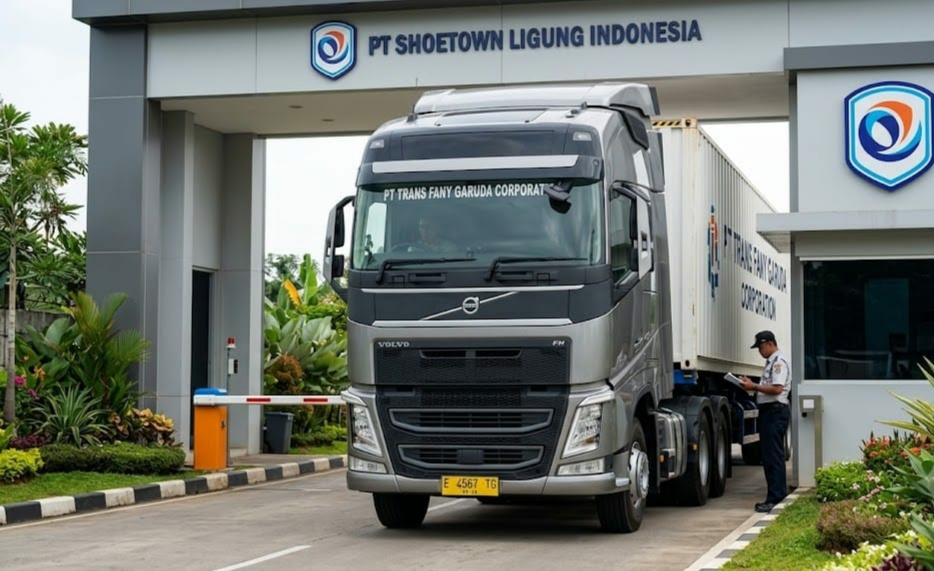
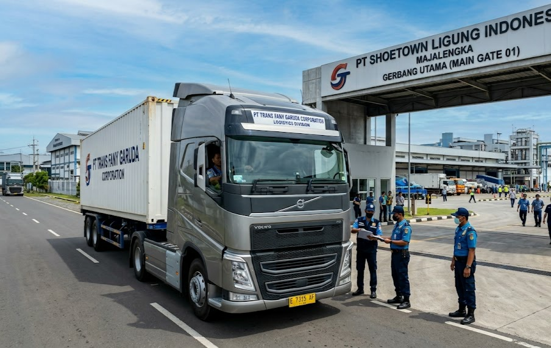
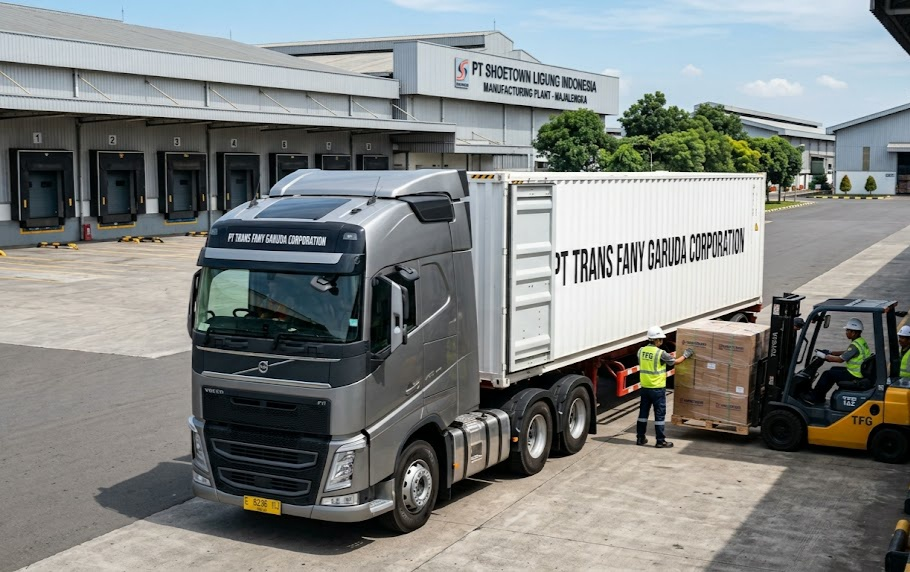
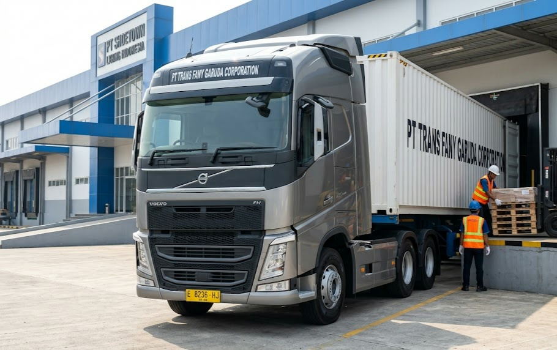
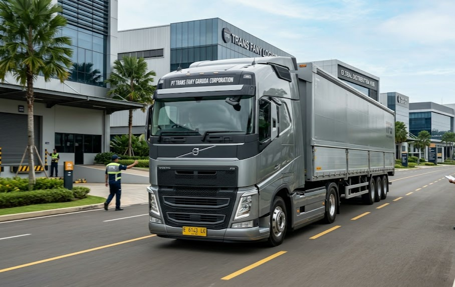

01
Container Port Distribution
Distribusi kontainer dari kawasan pelabuhan menggunakan armada modern untuk memastikan pengiriman yang cepat dan aman.
Solusi logistik modern, cepat, aman, dan terintegrasi untuk mendukung rantai distribusi di seluruh Indonesia.
Divisi Logistik PT TRANS FANY GARUDA CORPORATION menyediakan solusi distribusi barang yang cepat, aman, dan efisien untuk berbagai kebutuhan bisnis maupun industri.
Didukung sistem operasional modern serta jaringan distribusi yang terintegrasi, kami berkomitmen memberikan pelayanan logistik terbaik.
"Distribusi Cepat, Masa Depan Tepat."
Distribusi barang ke berbagai wilayah secara aman, cepat, dan tepat waktu.
Penyimpanan barang dengan sistem yang aman dan terorganisir.
Mengoptimalkan rantai pasok agar lebih efisien dan terintegrasi.
Pelayanan logistik beroperasi selama 24 jam dengan sistem 3 shift.
Pengiriman dilakukan secara efisien dengan waktu yang optimal.
Menjaga setiap barang pelanggan selama proses distribusi.
Menggunakan sistem manajemen logistik yang terintegrasi.
Didukung tenaga kerja yang berpengalaman di bidang logistik.
Dokumentasi operasional logistik PT TRANS FANY GARUDA CORPORATION yang menunjukkan komitmen terhadap kecepatan, keamanan, efisiensi, dan keandalan dalam setiap proses distribusi.
Distribusi kontainer dari kawasan pelabuhan menggunakan armada modern untuk memastikan pengiriman yang cepat dan aman.

Aktivitas distribusi barang dari pusat pergudangan dengan sistem operasional yang efisien dan terintegrasi.

Armada logistik modern yang siap melayani distribusi barang dengan standar keselamatan dan profesionalisme tinggi.

Pengiriman barang antarkota dan antarwilayah dengan armada berkapasitas besar yang mengutamakan ketepatan waktu.

Pengiriman barang melalui jaringan distribusi regional yang terintegrasi untuk menjangkau berbagai kawasan industri secara efisien.

Proses bongkar muat dan distribusi barang dengan dukungan sistem pergudangan yang modern, aman, dan terorganisir.

Mendukung kebutuhan rantai pasok industri melalui layanan logistik yang cepat, tepat, dan berkelanjutan.

Penanganan muatan dilakukan secara profesional dengan prosedur operasional yang mengutamakan keamanan dan efisiensi.

Layanan distribusi barang menggunakan armada modern untuk memastikan setiap pengiriman tiba dengan aman dan tepat waktu.

Jaringan logistik nasional PT TRANS FANY GARUDA CORPORATION yang siap mendukung distribusi barang secara cepat, aman, dan terpercaya ke berbagai wilayah Indonesia.
PT TRANS FANY GARUDA CORPORATION siap menjadi mitra logistik untuk mendukung distribusi, pergudangan, dan rantai pasok dengan pelayanan profesional, cepat, dan terpercaya.